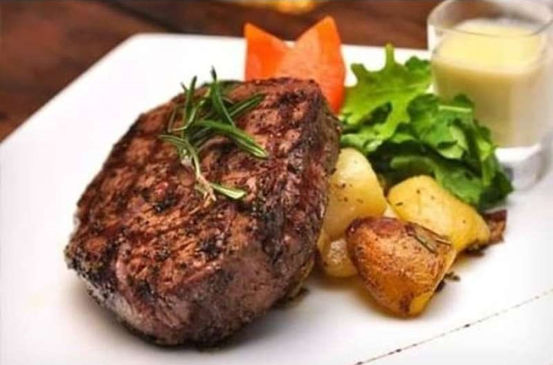
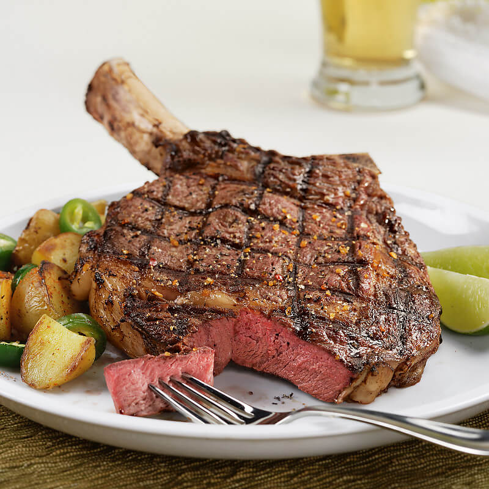

Category

Sirloin Steak
Sirloin Steak is a butter-tender piece of beef with a small rim of fat that serves as the flavour carrier. The steak comes from American beef and is cut from the bolar blade.
200gram 123K

Tenderloin Steak
A steak cut from the beef tenderloin, which is the inside muscle of the short loin. It is among the most desirable, tender, and expensive cuts of beef. The tenderloin makes an excellent roast or it can be cut into steaks.
200gram 145K

Rib-eye Steak
The ribeye – also called a Delmonico, Spencer, beauty steak, sarket steak, or Scotch fillet – is known for its rich, buttery flavor and tender texture. In a variety of butcher's cuts, the ribeye delivers mouthwatering, juiciness, and flavor in every bite.
200gram 125K